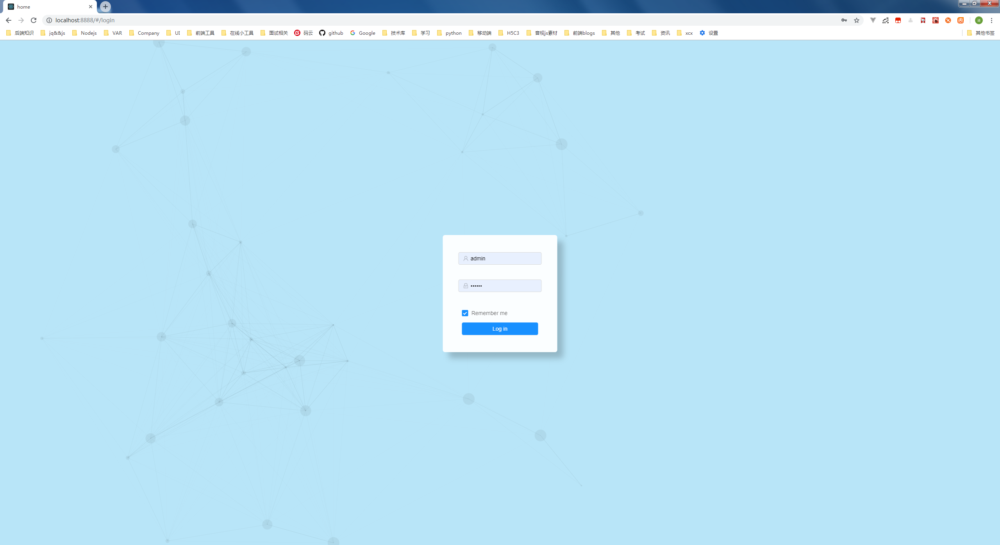
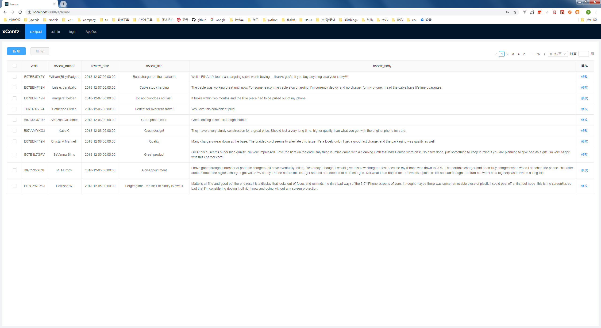

系统使用介绍 Introduction
- 系统介绍(gitbook): https://www.jugetaozi.com/react-admin-ssr/
登录页面

主页面

client 浏览器端
- react 16.7 + antd 13.3+ webpack 4.29 + redux + reat-redux
server 服务侧
- koa 2.6 + koa-router + mysql +ejs模板引擎
start 启动方式
npm i //安装依赖 如果没有翻墙设置代理 网速比较慢的情况下一直未安装成功 需要换cnpm淘宝镜像源
alias cnpm="npm --registry=https://registry.npm.taobao.org \
--cache=$HOME/.npm/.cache/cnpm \
--disturl=https://npm.taobao.org/dist \
--userconfig=$HOME/.cnpmrc"
cnpm i //执行完上面的语句后 从淘宝镜像下载依赖.
配置config.js // 填写mysql数据库配置 本地需要新建mysql数据库
npm init_sql //数据库初始化(确定有本地mysql数据库服务并且已开启和正确配置) ----- 如果需要执行gitbook初始化 git init 须确保本地有安装gitbook
npm run dev //启动服务侧 客户侧 打开浏览器
open in http://localhost:8888/
默认登录账户: admin 123456
目录结构:
│ .babelrc //babel配置
│ .editorconfig
│ .gitignore
│ .prettierrc
│ codeMean.md
│ config.js //mysql配置 秘钥等配置
│ package-lock.json
│ package.json
│ README.md
│ test.txt
│ yarn.lock
│
├─build // 打包输出目录
│ │ favicon.ico
│ │ manifest.json
│ │
│ ├─AppDoc //gitbook输出文件夹
│ │ │ README.md //gitbook readMe
│ │ │ SUMMARY.md //gitbook 概览
│ │ │
│ │ ├─help //help章节
│ │ │
│ │ ├─images
│ │ │
│ │ ├─note //note章节
│ │ │
│ │ └─_book //book静态文件输出目录
│ │ │
│ │ ├─gitbook
│ │ │
│ │ ├─help
│ │ │ help1.html
│ │ │ help1.md
│ │ │
│ │ ├─images
│ │ │ alipay.png
│ │ │
│ │ └─note
│ │
│ ├─file //服务器文件储存目录
│ │ ├─download //供下载的文件目录
│ │ └─upload //用户上传文件的存储目录
│ │
│ └─static //webpack前端静态资源打包输出目录
│ ├─js
│ │ admin.js
│ │ admin.js.map
│ │ index.js
│ │ index.js.map
│ │ main.js
│ │ main.js.map
│ │ vendor.js
│ │ vendor.js.map
│ │
│ └─static
│ └─media
│ logo.58eab546.png
│
├─config //webpack config
│ openBrowser.js
│ webpack.base.config.js
│ webpack.dev.config.js
│ webpack.prod.config.js
│
├─server // node服务侧目录 koa mysql
│ │ app.js
│ │
│ ├─codes
│ │
│ ├─controllers
│ │
│ ├─init
│ │
│ ├─middleware
│ │
│ ├─models
│ │
│ ├─routers
│ │
│ ├─services
│ │
│ ├─utils
│ │
│ └─views
│
└─src //前端react+antd项目目录
│
├─api
│
├─assets
│
├─components
│
├─layouts
│
├─libs
│
├─pages
│
├─router
│
├─store
│
└─utils
已实现功能
- 支持ES6/ES7/Promise
- 登录页面 + 首页菜单layout布局
- 登录权限验证/登录态持久化
- 全局的登录状态的路由拦截 接口验证
- 登录密码aes-256-cbc加密
- gitbook DOC